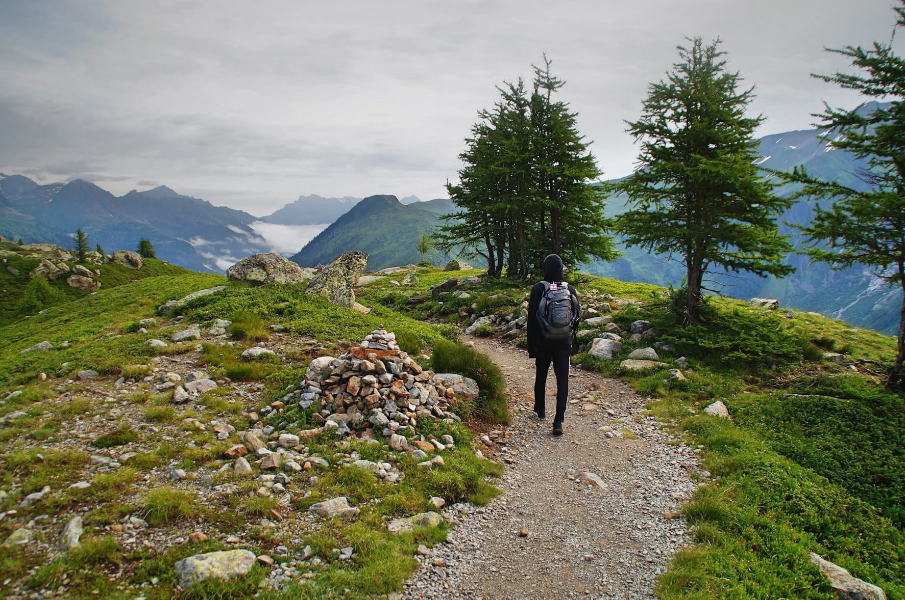

Explore the Land

Visitors can take part in a wide range of land-based activities on and off site. Discover the thrill of Lochquarry's land activities! Our safe and fun experiences, supervised by qualified staff, are designed to create unforgettable memories. Ready for an adventure? Book your experience today! |
Our land Activities
Experience the best of the outdoors with our diverse range of land activities. Whether you're looking for a challenging hike or a fun group activity, Lochquarry has something for everyone. All our activities are fully supervised by our qualified and experienced staff, ensuring a safe and enjoyable experience for all participants.
Fully supervised fun
Our fully supervised land activities ensure a safe and enjoyable experience for all young people aged 6-18. Our qualified staff are always on hand to provide guidance and support, allowing participants to challenge themselves and build confidence in a secure environment.
|

Hillwalking |
Embark on a guided hillwalking adventure and discover the breathtaking scenery surrounding Lochquarry. From short walks around the site to Munro-bagging expeditions, Lochquarry has it all! If you are a novice to hillwalking. don't worry, our experienced guides will lead you on a memorable journey, catering to all fitness levels. Walks can be tailored to suit any age over 6. Max group size 12. Ages 6+ |

Orienteering |
Test your navigation skills with our orienteering course, set in the centre's grounds. Work as a team to find all the markers and make it back in time to complete the challenge, perfect for building teamwork and problem-solving abilities. Groups of 2+, one map per group. Ages 6+ |

Archery |
Are you the next Robin Hood? Pick up the bow, pull on your boots and show your classmates what you're made of! After a safety briefing, expert tuition is provided to ensure a safe and enjoyable experience.You'll learn how to use the bows to hit the targets as well as the bullseye in no time at all. You can take part in fast and fun shootout competitions. Maximum group size 6. Ages 6+ |

Axe throwing |
Take yourself back to the time of thr Vikings and unleash your inner adventurer with the Axe Throwing. You’ll be able to put your axe throwing skills to the test after receiving expert tuition with all the necessary equipment and plenty of time to practice your aim. This fun experience is suitable for beginners and those who are looking to sharpen their skills, and is perfect for all ages over 10. Maximum Group size 6. Ages 10+ |
At Lochquarry Outdoor Centre, your safety is our top priority.
All our land activities are fully supervised by qualified and experienced staff. We provide all necessary equipment and ensure that every participant understands the safety guidelines before commencing any activity. Enjoy the adventure with peace of mind.
Lochquarry Outdoor Centre stands apart with our commitment to providing fully supervised activities led by qualified staff. We prioritize safety and fun, creating a supportive environment where young people can thrive. Book your land activity today and experience the Lochquarry difference!
‘The archery was brilliant, but not as good as axe throwing, I never thought we’d be allowed to do that! I got one of my axes right in the middle of the target’ − Scott, aged 13